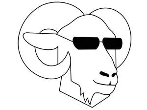

Trade Mark Journal No.2025/039 26 September 2025
UK00004264124 15 September 2025 (14,16,20,21,25)

- Class 14
- Keyrings; Keyrings of common metal; Lanyards for keys; Wristlets [jewellery]; Key chains as jewellery [trinkets or fobs]; Retractable key rings [trinkets or fobs]; Key rings [trinkets or fobs]; Fancy keyrings of precious metals; Key charms [trinkets or fobs]; Brooches [jewellery]; Jewellery brooches; Key holders [trinkets or fobs]; Key tags [trinkets or fobs]; Bracelets [jewellery]; Key chains [trinkets or fobs]; Key rings [trinkets or fobs] of precious metal; Pendants [jewellery]; Fobs for keys; Lockets [jewellery]; Decorative brooches [jewellery]; Necklaces [jewellery]; Bracelets; Pins [jewellery]; Pins being jewellery; Necklaces; Silver-plated bracelets; Jewelry brooches; Brooches being jewelry; Jewellery rope chain for bracelets; Brooches [jewelry]; Jewellery hat pins; Silver-plated necklaces; Amulets being jewellery; Amulets [jewellery]; Charms [jewellery]; Charms for jewellery; Jewellery charms; Pendants; Trinkets [jewellery]; Jewellery rope chain for necklaces; Decorative pins [jewellery]; Boxes for cufflinks; Cufflinks; Key chains [split rings with trinket or decorative fob]; Clasps for jewellery; Bangle bracelets; Jewellery chain of precious metal for bracelets; Rings being jewellery; Rings [jewellery]; Cuff-links; Gold-plated necklaces; Leather key fobs; Key rings [split rings with trinket or decorative fob]; Identification bracelets [jewelry]; Jewelry pins for use on hats; Amber pendants being jewellery; Gold plated brooches [jewellery]; Lapel pins [jewellery]; Jewellery chain of precious metal for necklaces; Ornaments [jewellery]; Charms for key rings; Bracelets made of embroidered textile [jewellery]; Jewellery, including imitation jewellery and plastic jewellery; Key chains for use as jewellery; Bracelets [jewelry]; Jewellery boxes; Key fobs [rings] coated with precious metal; Jewellery chains; Chains [jewellery]; Items of jewellery; Jewellery items; Pendants [jewelry]; Clips of silver [jewellery]; Key rings and key chains, and charms therefor; Amberoid pendants being jewellery; Bracelets for watches; Jewelry clips for adapting pierced earrings to clip-on earrings; Lockets [jewelry]; Bracelets [charity]; Charity bracelets; Pewter jewellery; Brooches [jewellery, jewelry (Am.)]; Plastic bracelets in the nature of jewelry; Bracelet charms; Metal key fobs; Identification bracelets of precious metal [jewelry]; Wooden jewellery boxes; Jewellery rope chain for anklets; Scarf clips being jewelry; Key fobs of imitation leather; Closures for necklaces; Necklaces [jewelry]; Enamelled jewellery.
- Class 16
- Invitations; Party invitations; Printed invitations; Invitation cards; Pads of party invitations; Printed paper invitations; Printed cardboard invitations; Announcement cards [stationery]; Envelopes [stationery]; Pop-up greetings cards; Envelopes for stationery use; Party stationery; Birthday cards; Envelopes; Greetings cards; Printed mail response cards; Occasion cards; Correspondence cards; Paper party decorations; Announcement cards; Greeting cards; Musical greetings cards; Printed paper signs featuring names for use for special events; Printed paper signs featuring table numbers for use for special events; Gift cards; Letterheads; Printed stationery; Organizers for stationery use; Musical greeting cards; Stickers [stationery]; Stationery; Printed event admission tickets; Party ornaments of paper; Metallic paper party decorations; Printed cards; Anniversary cards; Paper boxes for storing greeting cards; Plantable seed paper [stationery]; Postcards; Index cards [stationery]; Printed informational cards; Transparencies [stationery]; Stencils [stationery]; Printed newsletters; Paper folders [stationery]; Folders [stationery]; Stationery folders; Stationery boxes; Wedding albums; Printed recipe cards; Printed awards; Wedding books; Printed flyers; Paper stationery; Gift wrap cards; Paper envelopes for packaging; Clips for paper [stationery]; Wrappers [stationery]; Decorative paper garlands for parties; Printed award certificates; Paper cake decorations; Printed brochures; Envelope papers; Cards; Printed certificates; Printed calendars; Dinner mats of card; Paper gift wrapping ribbons; Printed menus; Print letters; Paper gift boxes; Files [stationery]; Printed plans; Gift certificates; Paper gift tags; Document holders [stationery]; Paper loyalty cards; Felt mats for Chinese calligraphy (stationery); Pins [stationery]; Printed informational flyers; Seals [stationery]; Thumbtacks [stationery]; Binders [stationery]; Gift paper.
- Class 20
- Plastic cake toppers; Plastic cake decorations; Cake decorations made of plastic; Mattress toppers.
- Class 21
- Mugs; Cups and mugs; Coffee mugs; Ceramic mugs; Earthenware mugs; Porcelain mugs; Mugs of porcelain; Beer mugs; Glass mugs; China mugs; Mugs of china; Insulated mugs; Travel mugs; Mug cosies; Mugs made of porcelain; Mugs made of earthenware; Mug racks; Mugs made of china; Drinking mugs made of porcelain; Vacuum mugs; Mugs made of plastic; Mug sleeves; Mugs made of ceramic materials; Mugs of precious metal; Mug trees; Drinkware; Teapots; Teacups (yunomi); Teacups [yunomi]; Coffee cups; Tankards; Coffee pots; Coasters (tableware); Porcelain coasters; Mugs made of fine bone china; Tea cups; Mugs, not of precious metal; Pint tankards; Coffee stirrers; Tumblers for use as drinking glasses; Carafes; Pewter tankards; Glass cups; Cups; Tumblers; Commemorative statuary cups of porcelain, ceramic, earthenware, terra-cotta or glass; Tea pots; Cups made of earthenware; Cups made of pottery; Demitasse sets comprised of cups and saucers; Figurines [statuettes] of porcelain, ceramic, earthenware or glass; Figurines of porcelain, ceramic, earthenware, terra-cotta or glass for cakes; Prize cups of porcelain, ceramic, earthenware, terra-cotta or glass; Goblets; Holders for tumblers; Glass carafes; Insulated bottles [flasks]; Figurines of earthenware; Saucepans (Earthenware -); Earthenware saucepans; Glass pots; Ceramic figurines; Trivets; Beer steins; Glasses, drinking vessels and barware; Steins; Ceramic tableware; Souvenir plates; Pewter goblets; Cups made of china; Pint glasses; Coffee pots [non-electric]; Non-electric coffee pots; Beer jugs; Tumblers [drinking vessels]; Tea canisters; Trivets [table utensils]; Tea cosies; Cosies (Tea -); Statuettes of porcelain, ceramic, earthenware or glass; Cardboard cups; Drinking steins; Beer glasses; Statues of porcelain, ceramic, earthenware or glass; Statues of porcelain, earthenware, ceramic or glass; Glass bowls; Bowls (Glass -); Busts of porcelain, ceramic, earthenware or glass; Figurines of glass; Liqueur cups; Plastic cups; Drinking cups; Insulated lids for plates and dishes; Insulating sleeve holder for beverage cups; Glass flasks [containers]; Glassware; Figurines of porcelain, ceramic, earthenware, terra-cotta or glass; Sippy cups; Beverage glassware; Urns being vases; Japanese-style teapots [kyusu]; Plaques of earthenware; Figurines of porcelain; Ceramic ornaments; Tableware of porcelain; Decanters; Coffee services [tableware]; Glass tableware; Crockery made of porcelain; Glass flasks; Boxes of earthenware; Coffee services of ceramic; Biodegradable cups; Stirrers (Drink -); Compostable cups; Glass decanters; Tableware, cookware and containers.
- Class 25
- Clothing; Knitwear [clothing]; Jackets [clothing]; Ready-to-wear clothing; Woolen clothing; Furs [clothing]; Layettes [clothing]; Clothing layettes; Garments for protecting clothing; Linen clothing; Headbands [clothing]; Headbands for clothing; Clothes; Gloves [clothing]; Gloves as clothing; Aprons [clothing]; Maternity clothing; Kerchiefs [clothing]; Jerseys [clothing]; Denims [clothing]; Shorts [clothing]; Cashmere clothing; Capes (clothing); Gabardines [clothing]; Oilskins [clothing]; Silk clothing; Leather clothing; Clothing of leather; Leather (Clothing of -); Collars [clothing]; Parts of clothing, footwear and headgear; Knitted clothing; Veils [clothing]; Hoods [clothing]; Windproof clothing; Corsets [clothing, foundation garments]; Embroidered clothing; Wristbands [clothing]; Bandeaux [clothing]; Belts [clothing]; Belts for clothing; Rainproof clothing; Waterproof clothing; Casual clothing; Visors [clothing]; Jackets being sports clothing; Jackets (Stuff -) [clothing]; Stuff jackets [clothing]; Playsuits [clothing]; Bottoms [clothing]; Ready-made clothing; Clothing for leisure wear; Latex clothing; Trunks being clothing; Infant clothing; Woven clothing; Leisure clothing; Drawers [clothing]; Drawers as clothing; Clothing for sports; Sports clothing; Clothing for children; Ties [clothing]; Athletic clothing; Muffs [clothing]; Bodies [clothing]; Clothing for babies; Tops [clothing]; Clothing for infants; Clothing for cycling; Weatherproof clothing; Fabric belts [clothing]; Pockets for clothing; Water-resistant clothing; Triathlon clothing; Handwarmers [clothing]; Beach clothing; Clothing for skiing; Thermal clothing; Chaps (clothing); Cowls [clothing]; Men's clothing; Fishing clothing; Braces for clothing; Dance clothing; Mitts [clothing].
Daria Suchorab